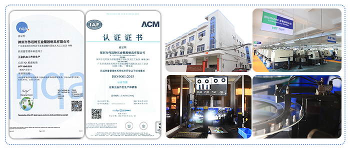
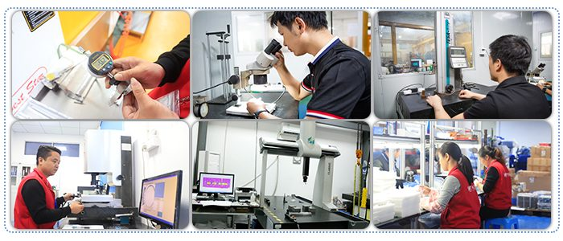

在这篇文章中，我将详细介绍CNC加工技术如何有效地解决咖啡机配件的小批量定制问题，确保每个零件都符合严格的质量标准，同时能够灵活应对客户不同的生产需求。
咖啡机配件通常涉及到多个精密部件，包括泵壳、过滤器、加热元件支架、流量控制阀等。这些零件不仅在尺寸、形状、材料上具有高度的特殊性，而且常常要求批量生产中的每一件都具备高精度和稳定性。因此，小批量定制成了咖啡机制造商在生产过程中常遇到的一个难题。

通常情况下，小批量生产意味着需求量相对较小，生产周期较短，且对零件的要求较高。在这种情况下，传统的生产方式往往会面临以下挑战：
幸运的是，CNC加工技术能够有效解决上述问题，成为咖啡机配件小批量定制的理想选择。通过高度自动化和精密控制，CNC加工不仅可以提高生产效率，还能够保证零件的高精度和一致性。以下是CNC加工如何满足咖啡机配件小批量定制需求的几个关键优势：
高精度保证： CNC加工采用计算机数控系统控制加工过程，能够在微米级别上实现精准控制。对于咖啡机配件中涉及的高精度部件，如泵壳、加热元件支架等，CNC加工能够确保每个零件的尺寸和公差都严格符合设计要求，避免传统加工方式可能出现的误差。
小批量生产灵活性： 传统生产方式往往需要制作昂贵的模具，而CNC加工则不需要。通过直接读取CAD设计文件，CNC加工可以灵活应对小批量生产的需求，不论是10件、100件还是更多，都可以在短时间内完成生产。这不仅大大缩短了生产周期，还降低了生产成本。
高重复性和一致性： 对于小批量生产，保持每个零件的一致性至关重要。CNC加工技术的最大优势之一便是高重复性。通过数控程序的自动化操作，每个零件在加工过程中都能确保精度和质量的一致，避免了传统人工操作中可能出现的波动。
复杂几何形状的实现： 咖啡机配件往往具有复杂的几何形状和细节，CNC加工能够在保证精度的同时，轻松完成复杂的几何形状和细小的加工细节。无论是复杂的内孔加工，还是需要光滑表面处理的外壳，CNC加工都能精确地加工出符合要求的零件。
为了更直观地展示CNC加工在咖啡机配件小批量定制中的实际效果，我们可以通过几个具体的应用案例来进行分析：
咖啡机泵壳的精密加工： 咖啡机的泵壳需要承受高压工作环境，因此必须具备足够的强度和精准的尺寸。CNC加工能够根据设计图纸精确加工出泵壳的外形，同时在需要的位置加工出精确的内孔、螺纹等细节，确保泵壳的功能和质量。
加热元件支架的定制： 咖啡机中的加热元件通常需要固定在特定的位置，确保其稳定性和安全性。CNC加工能够根据设计要求，精确制造出符合尺寸和强度要求的支架，并保证每个支架的精度一致，避免因加工误差导致的安装问题。
过滤器组件的高精度加工： 过滤器组件通常涉及多个配件，如金属网、塑料壳体等，这些配件需要精密配合，以确保过滤效果的稳定性。CNC加工能够精确控制各个零件的尺寸和形状，确保它们能够完美匹配，同时提高过滤器的工作效率和使用寿命。
流量控制阀的定制： 流量控制阀是咖啡机中的关键组件之一，它直接影响咖啡的出水量和质量。CNC加工技术能够精确加工阀体的内外形状，并确保阀门与阀座的配合精度，避免水流不稳定或泄漏等问题。
在咖啡机配件的小批量定制中，质量控制始终是最为关键的环节。CNC加工技术通过其高度自动化和精确控制的特点，有效提升了质量管控的稳定性。
实时监控与数据反馈： CNC加工设备通常配备了实时监控系统，能够在加工过程中实时反馈零件的加工状态。这意味着一旦出现任何质量问题，操作人员可以立即进行调整，确保每一件零件都符合标准。
零件一致性保障： 小批量生产中，零件的一致性尤为重要。CNC加工的高精度和高重复性，确保了每个零件在加工过程中都能保持一致的质量和精度，从而避免了人工操作中的误差。
质量追溯性： 通过数控系统的程序化操作，CNC加工可以记录每一件零件的加工数据，并确保加工过程可追溯。这为后续的质量检查和维护提供了可靠的数据支持，也能够帮助制造商解决潜在的质量问题。

对于咖啡机制造商来说，选择一个合适的CNC加工厂是确保配件质量和交期的关键因素。以下是我总结的一些选择标准：
技术实力与设备水平： 加工厂的技术实力和设备水平直接影响加工质量和生产效率。选择那些拥有先进设备和经验丰富的技术团队的加工厂，能够确保高精度和高质量的零件生产。
灵活性与响应速度： 小批量定制通常对生产周期有较高要求。选择那些能够快速响应并灵活调整生产计划的加工厂，能够帮助您缩短交期并按时交货。
质量保证体系： 具有完善质量保证体系的加工厂，能够有效控制生产过程中的每一个环节，确保每个零件的质量达到标准。建议选择具备ISO认证等质量认证的厂商。
售后服务： 良好的售后服务能够帮助您解决在使用过程中遇到的各种问题。选择那些能够提供及时售后服务的加工厂，可以确保您的长期合作稳定。
CNC加工技术凭借其高精度、高灵活性以及高一致性的特点，已经成为解决咖啡机配件小批量定制需求的理想选择。通过CNC加工，咖啡机制造商不仅能够确保每个零件的高质量和高精度，还能灵活应对小批量生产的挑战，缩短生产周期，降低成本。在选择CNC加工厂时，确保其技术实力、质量控制和售后服务能够满足您的需求，是确保产品顺利生产和高效交付的关键。

 全国服务热线
全国服务热线